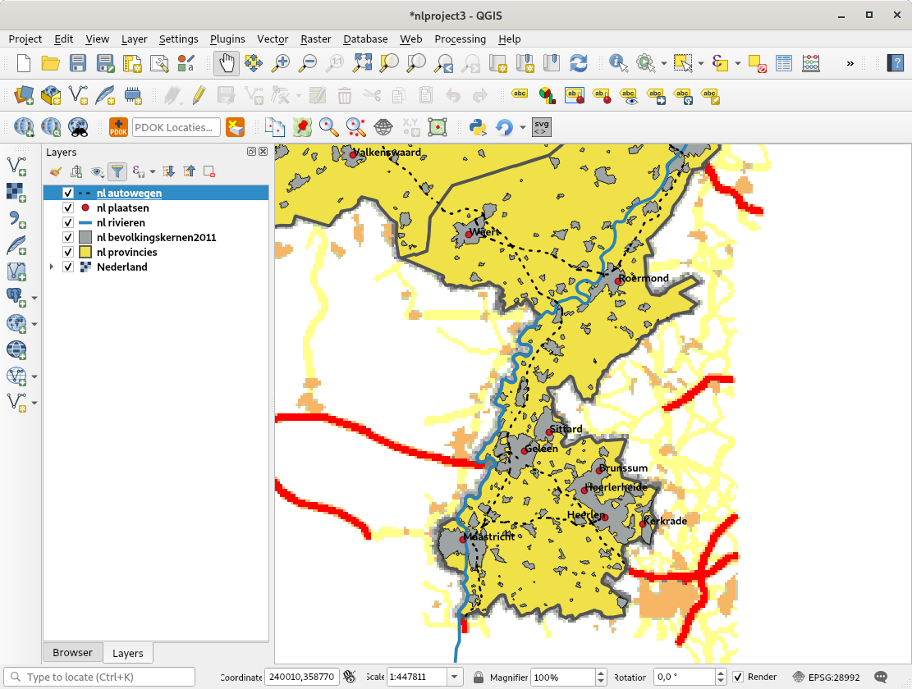

{kind=link}

SimpleSvg is a plugin which tries to save current map as SVG. Other then the normal SaveAsSVG in the composer, this plugin tries to keep the GIS-grouping intact:
layers in QGIS will be layers in Inkscape. Inkscape groups will have ids with the layername in it, so the id's kan be used of a search in
the xml-view (Ctrl-Shift-X) of Inkscape.
As extra feature, it is possible to set the 'Display Name' in the Layer Properties dialog to an attribute of
the layer. If set, THAT attribute value is then used to set an Inkscape Label on the xml item.
The plugin uses the screen coordinates (pixel values) to set the svg coordinates. Before version 0.8 the plugin picked only the features that were at least touching the current map view. Since 0.8 there is a checkbox, which UNchecked will make the plugin just fetch ALL vector objects from all layers. This means that for example you can load all countries of the world, zoom in to the netherlands (aka set a sort of 'resolution' for the coordinates) and then let the generate svg (at that scale) for all data in the data set. Be carefull though: fetching ALL data from big dataset can give other problems.
For lines and polygons it tries to save both pen and symbol style. For now only working with Simple Symbols.
For Points it can only save a point as a small colored circle.
Please sent further ideas and requests to richard@duif.net
A view of the Netherlands in qgis with a point, polygon and line vector layer, and a raster on the bottom:

Download the svg generated with the plugin: svgtest.svg
This svg loaded in Inkscape:
Install the plugin via the Plugin Manager within QGIS itself. It is uploaded to the QGIS Plugin Repository https://plugins.qgis.org